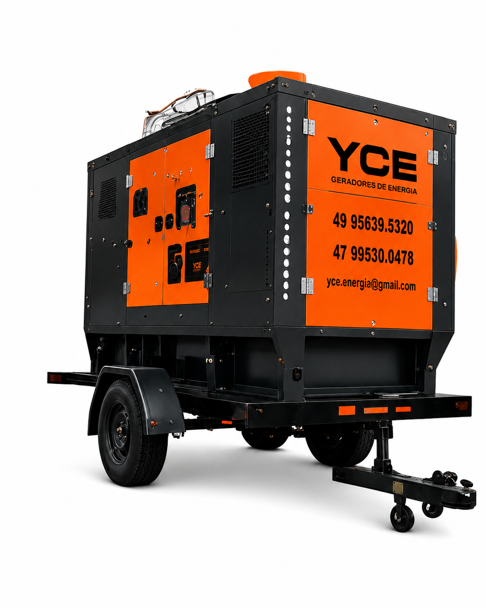
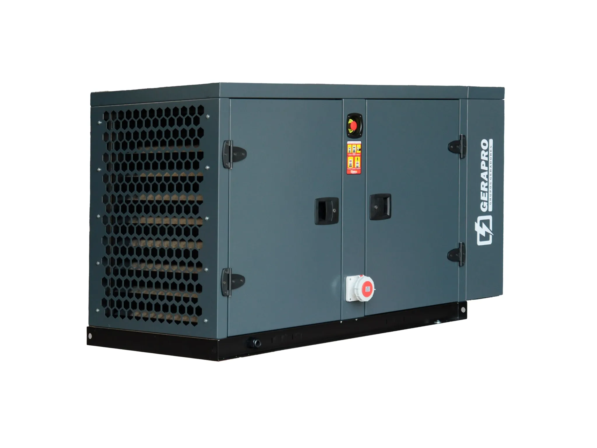
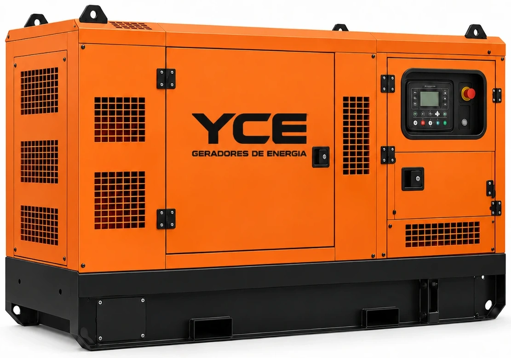

ONDE O GERADOR
SERÁ UTILIZADO?
Conte à equipe quais equipamentos serão alimentados, onde o gerador será utilizado e por quanto tempo. Essas informações ajudam na orientação técnica.
Venda, locação e manutenção de geradores
para empresas, indústrias e eventos.
Da locação à manutenção.

Informe o local, o período de uso e os equipamentos que precisam de energia para consultar a locação.
Consultar locaçãoSelecione um gerador para consultar
disponibilidade e especificações.

Venda · Locação · Manutenção
Converse com a equipe para confirmar especificações e disponibilidade.
Consultar equipamento
Conte à equipe quais equipamentos serão alimentados, onde o gerador será utilizado e por quanto tempo. Essas informações ajudam na orientação técnica.
Consulte as opções de compra e locação com a YCE. A equipe orienta a escolha conforme a aplicação e a disponibilidade dos equipamentos.
Para manutenção preventiva ou corretiva, informe a marca, o modelo e o que precisa ser verificado. A equipe orientará o atendimento.
Fale com a equipeEvento aberto ao público
Energia para um evento da EMBRAED à beira-mar, com ioga, banheira de gelo e cinema ao ar livre. A YCE apoiou a estrutura elétrica das atividades e dos espaços de interação com o público.
Show de abertura
A YCE forneceu energia para o show de abertura do Píer OPORTO, com suporte à estrutura do evento para manter os equipamentos em operação durante a programação.
Dois dias de evento
Durante os dois dias de programação no VivaPark, toda a energia do evento foi fornecida pela YCE Geradores, atendendo à estrutura e às atividades do início ao encerramento.
Lançamento da marca
Fornecimento de energia para o lançamento da Zeekr em Florianópolis. A YCE atendeu à estrutura de apresentação dos veículos elétricos e à recepção dos convidados.
Informe o local, as datas de uso e os equipamentos que precisam ser alimentados. A equipe verifica a disponibilidade e orienta o orçamento.
Consulte a disponibilidade e as condições de atendimento diretamente com a equipe pelo WhatsApp.
Sim. A YCE trabalha com manutenção preventiva e corretiva de geradores.
A disponibilidade varia. Fale com a equipe para consultar os equipamentos adequados à sua necessidade.
Fale com a YCE pelo WhatsApp e informe se precisa de compra, locação ou manutenção. Inclua o local e os detalhes do uso ou do equipamento.
Desde o primeiro contato fomos muito bem atendidos. A equipe veio de Balneário Camboriú para Rancho Queimado para realizar em nosso casamento e entregou tudo com excelência.
Alugamos o gerador para todos os nossos eventos no barco e a experiência foi impecável do início ao fim. Sempre pontual, o equipamento funcionou perfeitamente durante todo o evento, sem falhas ou interrupções. O serviço é de primeira linha, com uma equipe extremamente profissional e comprometida.
Não há palavras para expressar o quão profissionais são! Yuri é extremamente atencioso, sempre solícito com nossos clientes e isso faz toda a diferença para a operação do evento. Recomendo de olhos fechados!
Excelência define a YCE GERADORES! Somos parceiros há muitos anos e, em cada evento, o profissionalismo da equipe se destaca. Os equipamentos são de altíssima qualidade, sempre bem mantidos, e o suporte técnico é ágil e impecável. É uma empresa que transmite confiança e faz toda a diferença na entrega de um evento bem-sucedido!
Ficamos 3 meses com o gerador locado em nossa obra em Brusque, um dos melhores serviços prestados que já vi, meus parabéns a toda equipe.
Atendimento e entrega de qualidade. Super ágil e prontos para auxiliar no que for preciso.